To summarize, we find:
Sample size and effect size are not negatively correlated (in fact they’re positively correlated), suggesting that researchers are not prospectively planning sample sizes.
Consonant with previous findings, we find that effect sizes decrease over time.
We also find that sample sizes increase over time, which may account for the decrease in effect sizes over time.
We find no effect of impact factor of the journal on effect size.
An important component of reproducibility is complete description of data in published report. This is critical both for evaluating an individual study, but also for the purposes of a cumulative science (e.g. meta-analysis). Here we explore the extent to which papers report desired statistics such as test-statistics mean and standard deviation, effect sizes and test statistics.
counts = all_data %>%
summarise(test_statistic = sum(!is.na(t) | !is.na(F) | !is.na(r)),
means = sum(!is.na(x_1)),
SD = sum(!is.na(SD_1)),
d = sum(!is.na(d_calc)),
g = sum(!is.na(g_calc)),
r = sum(!is.na(r_calc)),
age_range = sum(!is.na(age_range_1)),
gender = sum(!is.na(gender_1))) %>%
gather("coded_variable", "n") %>%
mutate(coded = "coded") %>%
mutate(total = nrow(all_data)) %>%
mutate(coded_variable = factor(coded_variable, levels = c("d", "g", "r", "means",
"SD", "test_statistic",
"age_range", "gender")))
counts = counts %>%
mutate(n = total - n,
coded = "uncoded") %>%
bind_rows(counts) %>%
mutate(n_lab = ifelse(coded == "coded", n, "")) %>%
arrange(coded)
ggplot(counts) +
geom_bar(aes(x = coded_variable,
y = n/total,
fill = coded,
order = coded),
stat = "identity") +
ylim(0,1) +
ylab("Proportion coded") +
xlab("Coded variable") +
ggtitle("All data") +
#annotate("text", x = 1, y = .9,
# label = paste("N =", counts$total[1]), size = 6) +
scale_fill_manual(values=c( "lightgreen", "grey")) +
geom_text(aes(label = n_lab, x = coded_variable, y = n/total -.06) )+
theme_bw() +
theme(panel.border = element_blank(),
panel.grid.major = element_blank(),
panel.grid.minor = element_blank(),
axis.line = element_line(colour = "black"),
text = element_text(size=20),
axis.text.x = element_text(angle = 30, hjust = 1))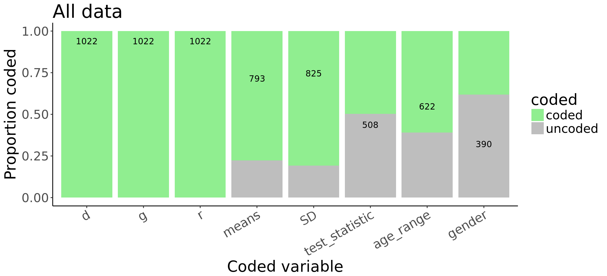 This analysis is in practice difficult because our many of our source MA’s include effect sizes that were included by the coders. Similarly, the proportion of coded gender in many cases reflects only that the coder chose not to code that, not that this information was not present. Nevertheless, this analysis gives us a good sense of the the proportion of papers that report means and standard deviations (about two-thirds).
By MA
counts = all_data %>%
group_by(dataset) %>%
summarise(test_statistic = sum(!is.na(t) | !is.na(F)),
means = sum(!is.na(x_1)),
SD = sum(!is.na(SD_1)),
d = sum(!is.na(d_calc)),
g = sum(!is.na(g_calc)),
r = sum(!is.na(r_calc)),
age_range = sum(!is.na(age_range_1)),
gender = sum(!is.na(gender_1)),
total = n()) %>%
gather(coded_variable, n, -dataset, -total) %>%
mutate(coded = "coded") %>%
mutate(coded_variable = factor(coded_variable, levels = c("d", "g", "r", "means",
"SD", "test_statistic",
"age_range", "gender")))
counts = counts %>%
mutate(n = total - n,
coded = "uncoded") %>%
bind_rows(counts) %>%
mutate(n_lab = ifelse(coded == "coded", n, "")) %>%
arrange(coded)
ggplot(counts, aes(fill = coded)) +
geom_bar(aes(x = factor(coded_variable),
y = n/total), ## FIX THIS
stat = "identity",
position = "fill") +
facet_wrap(~dataset, ncol=2) +
ylim(0,1) +
ylab("Proportion coded") +
xlab("Coded variable") +
scale_fill_manual(values = c("lightgreen", "grey")) +
geom_text(aes(label = n_lab,
x = coded_variable,
y = n/total -.06)) +
theme_bw() +
theme(panel.border = element_blank(),
panel.grid.major = element_blank(),
panel.grid.minor = element_blank(),
axis.line = element_line(colour = "black"),
text = element_text(size=20),
strip.background = element_blank(),
axis.text.x = element_text(angle = 30, hjust = 1))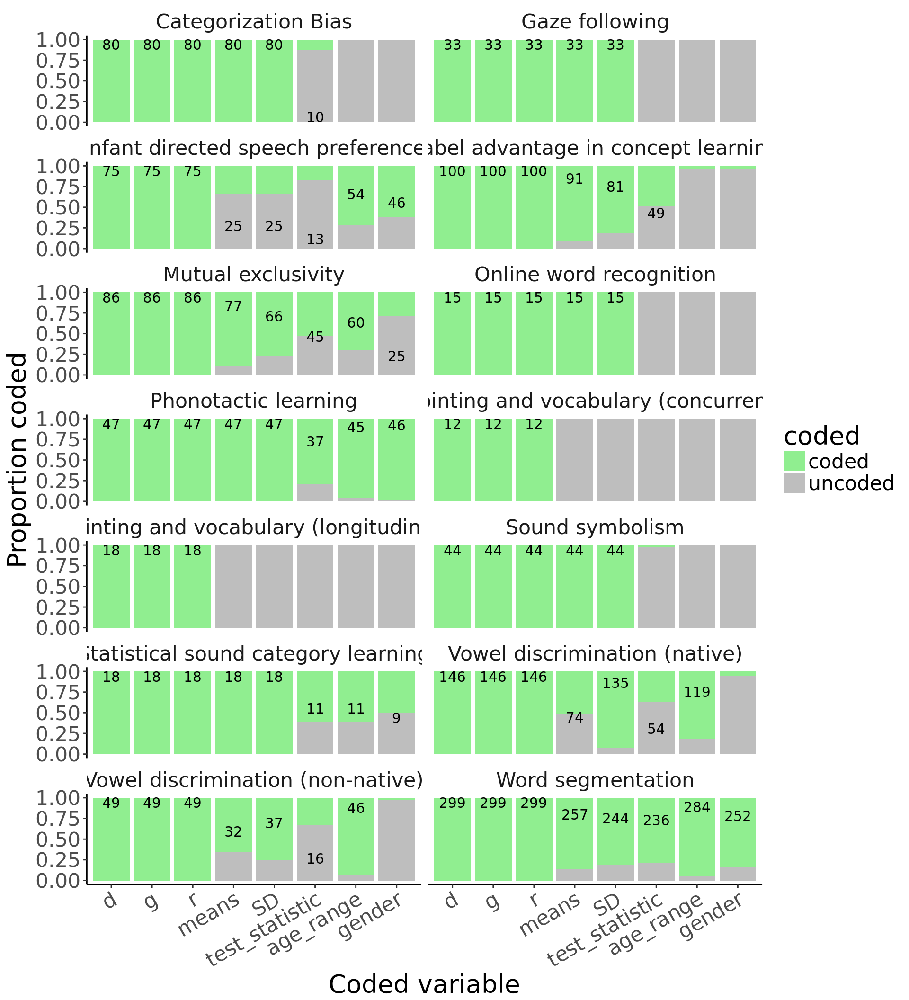
If sample size and effect sizes are appropriately coupled, we should expect sample size to decrease as effect size increases. We test this by looking at the relationship between sample sizes and effect size, after residualizing out the effect of (1) phenomenon, (2) age, (3) method, and (4) response mode.
Compute residuals.
full.model = rma(d_calc ~ method + response_mode + mean_age_1 + dataset,
vi = d_var_calc, data = all_data, method = "REML")
p.model = rma(d_calc ~ method + mean_age_1 + dataset,
vi = d_var_calc, data = all_data, method = "REML")
residuals = rstandard(full.model)
all_data = all_data %>%
bind_cols(as.data.frame(residuals$resid, stringsAsFactors = FALSE),
as.data.frame(residuals$z, stringsAsFactors = FALSE)) %>%
rename(residual.d = `residuals$resid`,
residual.d.s = `residuals$z`) # standardizedall_data = all_data %>%
mutate(n_total = ifelse(!is.na(n_2), n_1 + n_2, n_1))
ggplot(all_data , aes(y = n_total, x = residual.d.s, color = dataset)) +
geom_point() +
geom_smooth(method = "lm") +
theme_bw() +
xlab("Standardized residual effect size") +
ylab("Sample size") +
facet_wrap(~dataset, scales = "free") +
theme(legend.position="none")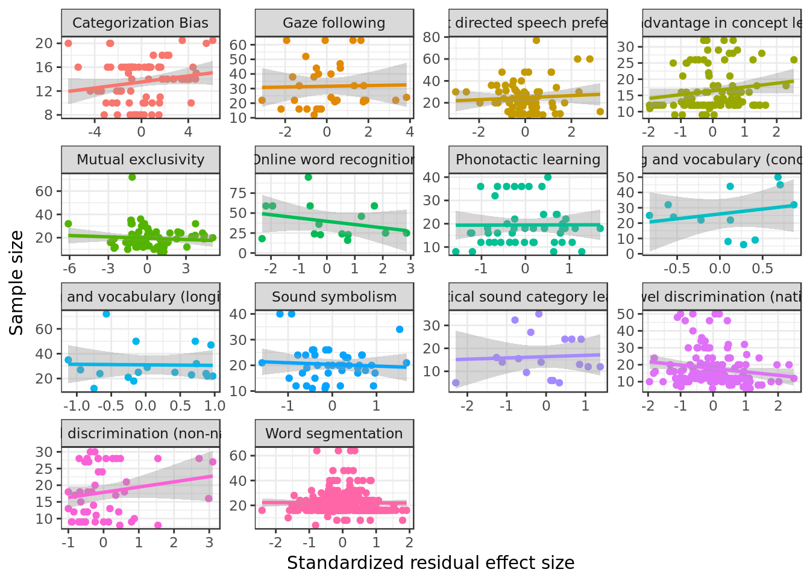
all_data %>%
group_by(dataset) %>%
do(tidy(cor.test(.$residual.d.s,.$n_total))) %>%
select(dataset, estimate, p.value) %>%
mutate(sig = ifelse(p.value < .05, "*", "")) %>%
kable()| dataset | estimate | p.value | sig |
|---|---|---|---|
| Categorization Bias | 0.1786323 | 0.1128823 | |
| Gaze following | 0.0243553 | 0.8929789 | |
| Infant directed speech preference | 0.0713839 | 0.5427918 | |
| Label advantage in concept learning | 0.1628867 | 0.1053995 | |
| Mutual exclusivity | -0.0802104 | 0.4628634 | |
| Online word recognition | -0.2796763 | 0.3127135 | |
| Phonotactic learning | 0.0043939 | 0.9766160 | |
| Pointing and vocabulary (concurrent) | 0.2359597 | 0.4603219 | |
| Pointing and vocabulary (longitudinal) | -0.0209616 | 0.9342043 | |
| Sound symbolism | -0.0674878 | 0.6633646 | |
| Statistical sound category learning | 0.0560271 | 0.8252400 | |
| Vowel discrimination (native) | -0.1666192 | 0.0444275 | * |
| Vowel discrimination (non-native) | 0.1900382 | 0.1909133 | |
| Word segmentation | -0.0069386 | 0.9048961 |
Essentially no evidence that researchers are prospectively planning sample size.
Collapsing across MAs:
ggplot(all_data , aes(y = n_total, x = residual.d.s)) +
geom_point(aes( color = dataset)) +
geom_smooth(method = "lm") +
theme_bw() +
xlab("Standardized residual effect size") +
ylab("Sample size") +
theme(legend.position="none")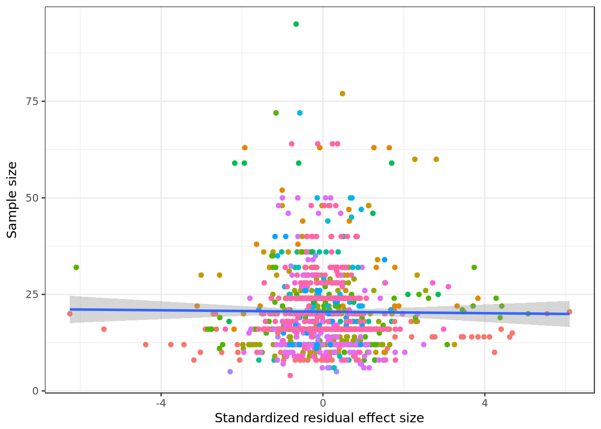
kable(tidy(cor.test(all_data$residual.d.s,all_data$n_total)))| estimate | statistic | p.value | parameter | conf.low | conf.high | method | alternative |
|---|---|---|---|---|---|---|---|
| -0.010661 | -0.3405039 | 0.7335472 | 1020 | -0.0719359 | 0.0506941 | Pearson’s product-moment correlation | two.sided |
Here we see a positive relationship between effect size and sample size: As effect sizes get bigger, sample sizes get bigger. If researchers were prospectively planning studies, we would expect that opposite pattern.
If studies are randomly sampled from the population of possible studies, effect sizes should not be biased by year. Alternatively, there is previous work suggesting that effect sizes decrease over time in a literature (Jennions & Møller, 2002; Leimu & Koricheva 2004, Lehrer 2010). Here we examine this possibiilty, using residualized effect sizes.
all_data = all_data %>%
mutate(year = as.numeric(unlist(lapply(strsplit(unlist(study_ID),
"[^0-9]+"), function(x) unlist(x)[2])))) %>%
mutate(year = ifelse(grepl("submitted",study_ID), 2016, year)) %>%
mutate(year = ifelse(dataset == "Phonotactic learning" | dataset == "Statistical sound category learning", as.numeric(unlist(lapply(strsplit(unlist(short_cite),
"[^0-9]+"), function(x) unlist(x)[2]))), year))
ggplot(all_data , aes(x = year, y = residual.d.s, color = dataset)) +
geom_point() +
geom_smooth(method = "lm", colour = "black") +
facet_wrap(~ dataset, scales = "free_y") +
theme_bw() +
xlab("published year") +
ylab("standardized residual effect size") +
theme(legend.position="none")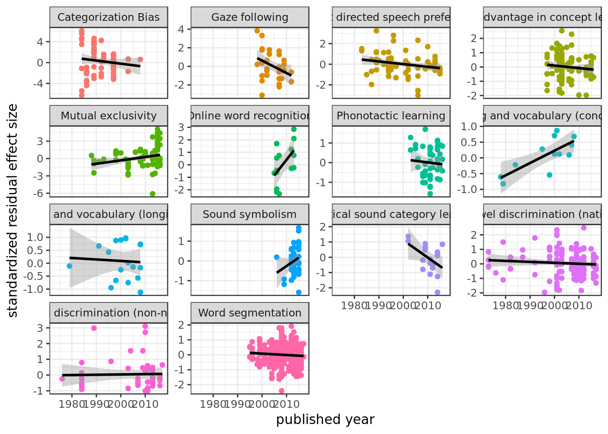
We see some bias of year here: In four cases (gaze following, IDS, statistical sound category, and word segementation), we see effect size decrease with year. For ME, we see a positive effect (but that’s probably due to Frank et al 2015).
all_data %>%
group_by(dataset) %>%
do(tidy(cor.test(.$residual.d.s,.$year))) %>%
select(dataset, estimate, p.value) %>%
mutate(sig = ifelse(p.value < .05, "*", "")) %>%
kable()| dataset | estimate | p.value | sig |
|---|---|---|---|
| Categorization Bias | -0.1275493 | 0.2595340 | |
| Gaze following | -0.3615803 | 0.0386804 | * |
| Infant directed speech preference | -0.2323693 | 0.0448426 | * |
| Label advantage in concept learning | -0.0969621 | 0.3372090 | |
| Mutual exclusivity | 0.2537340 | 0.0184075 | * |
| Online word recognition | 0.5455340 | 0.0354270 | * |
| Phonotactic learning | -0.0706944 | 0.6367861 | |
| Pointing and vocabulary (concurrent) | 0.7536759 | 0.0046414 | * |
| Pointing and vocabulary (longitudinal) | -0.0584892 | 0.8176798 | |
| Sound symbolism | 0.2292760 | 0.1343709 | |
| Statistical sound category learning | -0.4726345 | 0.0476236 | * |
| Vowel discrimination (native) | -0.0801601 | 0.3361495 | |
| Vowel discrimination (non-native) | 0.0245527 | 0.8670104 | |
| Word segmentation | -0.0693456 | 0.2318862 |
Here’s the same analysis, but fitting meta-analytic models instead (which allows us to weight by study precision).
overall_es <- function(ma_data){
# get datasets where we only have one levels for method
bad_datasets = all_data %>%
group_by(dataset, method) %>%
slice(1) %>%
select(dataset, method) %>%
group_by(dataset) %>%
summarize(n = n()) %>%
filter(n == 1) %>%
select(dataset)
if(is.element(ma_data$dataset[1], bad_datasets$dataset)){
model = metafor::rma(ma_data$d_calc~ ma_data$mean_age_1 + ma_data$year, ma_data$d_var_calc, method = "REML",
control = list(maxiter = 1000, stepadj = 0.5))
} else {
model = metafor::rma(ma_data$d_calc~ ma_data$mean_age_1 + ma_data$year + ma_data$method , ma_data$d_var_calc, method = "REML",
control = list(maxiter = 1000, stepadj = 0.5))
}
data.frame(dataset = ma_data$dataset[1],
year.effect = model$b[3],
year.pvalue = model$pval[3],
stringsAsFactors = FALSE)
}
all_data %>%
split(.$dataset) %>%
map(function(ma_data) overall_es(ma_data)) %>%
bind_rows() %>%
mutate(sig = ifelse(year.pvalue < .05, "*", "")) %>%
kable()| dataset | year.effect | year.pvalue | sig |
|---|---|---|---|
| Categorization Bias | -0.0608129 | 0.2951118 | |
| Gaze following | -0.0353034 | 0.1093870 | |
| Infant directed speech preference | -0.0358175 | 0.0047120 | * |
| Label advantage in concept learning | -0.0078726 | 0.5199541 | |
| Mutual exclusivity | 0.0174397 | 0.2690138 | |
| Online word recognition | 0.1518804 | 0.0044119 | * |
| Phonotactic learning | -0.0069573 | 0.7404821 | |
| Pointing and vocabulary (concurrent) | 0.0239604 | 0.2055760 | |
| Pointing and vocabulary (longitudinal) | -0.0144813 | 0.4535335 | |
| Sound symbolism | 0.0487791 | 0.3155883 | |
| Statistical sound category learning | -0.0689837 | 0.0248699 | * |
| Vowel discrimination (native) | -0.0182265 | 0.0497690 | * |
| Vowel discrimination (non-native) | 0.0176743 | 0.0839001 | |
| Word segmentation | -0.0079667 | 0.0711348 | |
| Same as before but now here also effect o | f year for nat | ive vowels. |
Collapsing across meta-analyses.
ggplot(all_data , aes(x = year, y = residual.d.s, color = dataset)) +
geom_point() +
geom_smooth(method = "lm", colour = "black") +
theme_bw() +
xlab("published year") +
ylab("standardized residual effect size") +
theme(legend.position="none")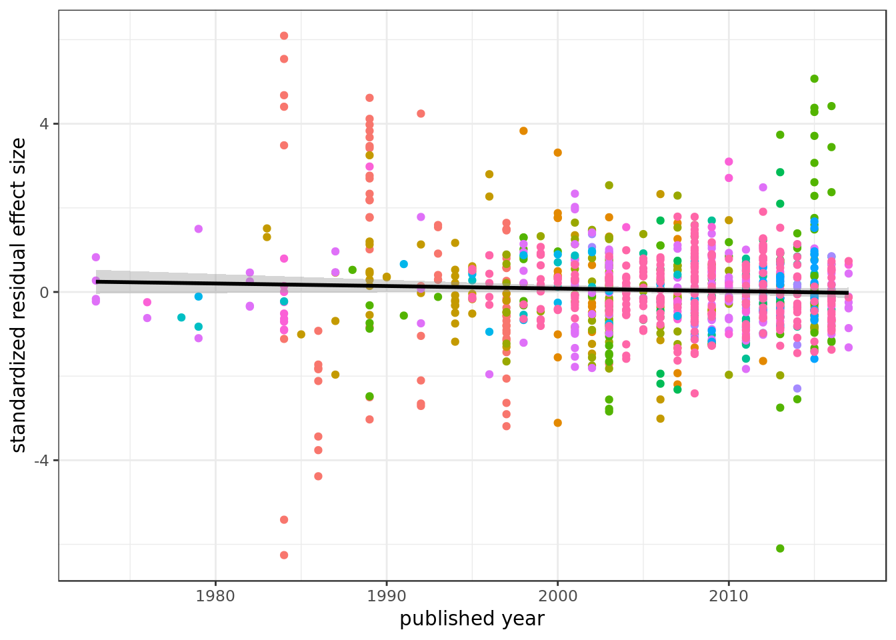
Effect size decreases over time. It’s not clear what the right analysis here is.
Correlation with raw effect sizes in significant.
kable(tidy(cor.test(all_data$d_calc,all_data$year)))| estimate | statistic | p.value | parameter | conf.low | conf.high | method | alternative |
|---|---|---|---|---|---|---|---|
| -0.1779643 | -5.775924 | 0 | 1020 | -0.236703 | -0.1179293 | Pearson’s product-moment correlation | two.sided |
Correlation with residualized effect sizes is not significant.
kable(tidy(cor.test(all_data$residual.d.s,all_data$year)))| estimate | statistic | p.value | parameter | conf.low | conf.high | method | alternative |
|---|---|---|---|---|---|---|---|
| -0.0433229 | -1.384923 | 0.1663787 | 1020 | -0.1043676 | 0.0180469 | Pearson’s product-moment correlation | two.sided |
RMA with year as moderator is significant when method is included as moderator.
rma(d_calc ~ method + mean_age_1 + dataset + year,
vi = d_var_calc, data = all_data, method = "REML")##
## Mixed-Effects Model (k = 1022; tau^2 estimator: REML)
##
## tau^2 (estimated amount of residual heterogeneity): 0.3174 (SE = 0.0178)
## tau (square root of estimated tau^2 value): 0.5634
## I^2 (residual heterogeneity / unaccounted variability): 86.13%
## H^2 (unaccounted variability / sampling variability): 7.21
## R^2 (amount of heterogeneity accounted for): 30.08%
##
## Test for Residual Heterogeneity:
## QE(df = 996) = 5127.8755, p-val < .0001
##
## Test of Moderators (coefficient(s) 2:26):
## QM(df = 25) = 319.8136, p-val < .0001
##
## Model Results:
##
## estimate se zval
## intrcpt 10.4421 7.0148 1.4886
## methodcentral fixation -0.2216 0.3171 -0.6988
## methodconditioned head-turn 0.5140 0.3264 1.5747
## methodforced-choice 0.5596 0.4070 1.3749
## methodhead-turn preference procedure -0.1822 0.3216 -0.5667
## methodhigh-amplitude sucking 0.4452 0.3857 1.1541
## methodhybrid visual habituation procedure -0.9770 0.4322 -2.2602
## methodlooking while listening -0.2009 0.3557 -0.5649
## methododdball -0.2578 0.3794 -0.6793
## methodpointing 0.6817 0.4530 1.5048
## methodstimulus alternation -0.2914 0.3360 -0.8673
## methodword-object pairing -0.6813 0.4756 -1.4326
## mean_age_1 -0.0001 0.0000 -1.5999
## datasetGaze following 0.6796 0.1543 4.4044
## datasetInfant directed speech preference 0.7834 0.2759 2.8393
## datasetLabel advantage in concept learning -0.1060 0.1283 -0.8259
## datasetMutual exclusivity 0.4282 0.1253 3.4184
## datasetOnline word recognition 1.5652 0.3183 4.9171
## datasetPhonotactic learning 0.3115 0.2947 1.0573
## datasetPointing and vocabulary (concurrent) 0.4006 0.3241 1.2359
## datasetSound symbolism 0.3549 0.2589 1.3711
## datasetStatistical sound category learning 0.0664 0.3146 0.2111
## datasetVowel discrimination (native) 0.7134 0.2802 2.5456
## datasetVowel discrimination (non-native) 0.6483 0.2937 2.2073
## datasetWord segmentation 0.4714 0.2805 1.6804
## year -0.0052 0.0035 -1.4926
## pval ci.lb ci.ub
## intrcpt 0.1366 -3.3066 24.1908
## methodcentral fixation 0.4847 -0.8431 0.3999
## methodconditioned head-turn 0.1153 -0.1258 1.1538
## methodforced-choice 0.1692 -0.2381 1.3573
## methodhead-turn preference procedure 0.5709 -0.8125 0.4480
## methodhigh-amplitude sucking 0.2485 -0.3109 1.2012
## methodhybrid visual habituation procedure 0.0238 -1.8242 -0.1298 *
## methodlooking while listening 0.5721 -0.8981 0.4962
## methododdball 0.4970 -1.0015 0.4859
## methodpointing 0.1324 -0.2062 1.5696
## methodstimulus alternation 0.3858 -0.9498 0.3671
## methodword-object pairing 0.1520 -1.6133 0.2508
## mean_age_1 0.1096 -0.0002 0.0000
## datasetGaze following <.0001 0.3772 0.9820 ***
## datasetInfant directed speech preference 0.0045 0.2426 1.3242 **
## datasetLabel advantage in concept learning 0.4088 -0.3574 0.1455
## datasetMutual exclusivity 0.0006 0.1827 0.6737 ***
## datasetOnline word recognition <.0001 0.9413 2.1891 ***
## datasetPhonotactic learning 0.2904 -0.2660 0.8891
## datasetPointing and vocabulary (concurrent) 0.2165 -0.2347 1.0359
## datasetSound symbolism 0.1703 -0.1524 0.8623
## datasetStatistical sound category learning 0.8328 -0.5503 0.6831
## datasetVowel discrimination (native) 0.0109 0.1641 1.2626 *
## datasetVowel discrimination (non-native) 0.0273 0.0726 1.2239 *
## datasetWord segmentation 0.0929 -0.0784 1.0211 .
## year 0.1356 -0.0121 0.0016
##
## ---
## Signif. codes: 0 '***' 0.001 '**' 0.01 '*' 0.05 '.' 0.1 ' ' 1RMA with year as moderator is significant when response mode is included as moderator.
rma(d_calc ~ response_mode + mean_age_1 + dataset + year,
vi = d_var_calc, data = all_data, method = "REML")##
## Mixed-Effects Model (k = 1022; tau^2 estimator: REML)
##
## tau^2 (estimated amount of residual heterogeneity): 0.3312 (SE = 0.0184)
## tau (square root of estimated tau^2 value): 0.5755
## I^2 (residual heterogeneity / unaccounted variability): 86.64%
## H^2 (unaccounted variability / sampling variability): 7.48
## R^2 (amount of heterogeneity accounted for): 27.04%
##
## Test for Residual Heterogeneity:
## QE(df = 1002) = 5263.0049, p-val < .0001
##
## Test of Moderators (coefficient(s) 2:20):
## QM(df = 19) = 279.8832, p-val < .0001
##
## Model Results:
##
## estimate se zval
## intrcpt 19.3530 6.3791 3.0338
## response_modeEEG -0.3394 0.2068 -1.6415
## response_modeeye-tracking -0.3171 0.0577 -5.4918
## response_modeNIRS -0.4043 0.1663 -2.4317
## response_modeother 0.0364 0.2841 0.1281
## mean_age_1 -0.0001 0.0000 -1.5447
## datasetGaze following 1.0422 0.1614 6.4590
## datasetInfant directed speech preference 0.2490 0.1367 1.8220
## datasetLabel advantage in concept learning 0.1226 0.1294 0.9470
## datasetMutual exclusivity 0.5763 0.1242 4.6411
## datasetOnline word recognition 1.1847 0.2006 5.9064
## datasetPhonotactic learning -0.0459 0.1554 -0.2953
## datasetPointing and vocabulary (concurrent) 0.4856 0.4022 1.2074
## datasetPointing and vocabulary (longitudinal) 0.1163 0.3557 0.3271
## datasetSound symbolism 0.0556 0.1568 0.3549
## datasetStatistical sound category learning -0.3342 0.1988 -1.6810
## datasetVowel discrimination (native) 0.3875 0.1302 2.9758
## datasetVowel discrimination (non-native) 0.3575 0.1502 2.3796
## datasetWord segmentation -0.1698 0.1211 -1.4022
## year -0.0094 0.0032 -2.9390
## pval ci.lb ci.ub
## intrcpt 0.0024 6.8503 31.8558
## response_modeEEG 0.1007 -0.7447 0.0658
## response_modeeye-tracking <.0001 -0.4302 -0.2039
## response_modeNIRS 0.0150 -0.7303 -0.0784
## response_modeother 0.8981 -0.5204 0.5932
## mean_age_1 0.1224 -0.0002 0.0000
## datasetGaze following <.0001 0.7259 1.3584
## datasetInfant directed speech preference 0.0685 -0.0189 0.5169
## datasetLabel advantage in concept learning 0.3437 -0.1311 0.3763
## datasetMutual exclusivity <.0001 0.3329 0.8197
## datasetOnline word recognition <.0001 0.7916 1.5779
## datasetPhonotactic learning 0.7678 -0.3504 0.2587
## datasetPointing and vocabulary (concurrent) 0.2273 -0.3027 1.2739
## datasetPointing and vocabulary (longitudinal) 0.7436 -0.5809 0.8135
## datasetSound symbolism 0.7227 -0.2516 0.3629
## datasetStatistical sound category learning 0.0928 -0.7239 0.0555
## datasetVowel discrimination (native) 0.0029 0.1323 0.6428
## datasetVowel discrimination (non-native) 0.0173 0.0630 0.6520
## datasetWord segmentation 0.1609 -0.4072 0.0676
## year 0.0033 -0.0157 -0.0031
##
## intrcpt **
## response_modeEEG
## response_modeeye-tracking ***
## response_modeNIRS *
## response_modeother
## mean_age_1
## datasetGaze following ***
## datasetInfant directed speech preference .
## datasetLabel advantage in concept learning
## datasetMutual exclusivity ***
## datasetOnline word recognition ***
## datasetPhonotactic learning
## datasetPointing and vocabulary (concurrent)
## datasetPointing and vocabulary (longitudinal)
## datasetSound symbolism
## datasetStatistical sound category learning .
## datasetVowel discrimination (native) **
## datasetVowel discrimination (non-native) *
## datasetWord segmentation
## year **
##
## ---
## Signif. codes: 0 '***' 0.001 '**' 0.01 '*' 0.05 '.' 0.1 ' ' 1RMA with year as moderator is marginal when response mode and method are included as moderator.
rma(d_calc ~ response_mode + method + mean_age_1 + dataset + year,
vi = d_var_calc, data = all_data, method = "REML")##
## Mixed-Effects Model (k = 1022; tau^2 estimator: REML)
##
## tau^2 (estimated amount of residual heterogeneity): 0.3156 (SE = 0.0178)
## tau (square root of estimated tau^2 value): 0.5618
## I^2 (residual heterogeneity / unaccounted variability): 86.07%
## H^2 (unaccounted variability / sampling variability): 7.18
## R^2 (amount of heterogeneity accounted for): 30.47%
##
## Test for Residual Heterogeneity:
## QE(df = 992) = 5093.0893, p-val < .0001
##
## Test of Moderators (coefficient(s) 2:30):
## QM(df = 29) = 330.6864, p-val < .0001
##
## Model Results:
##
## estimate se zval
## intrcpt 7.0029 7.1282 0.9824
## response_modeEEG 0.1811 0.4693 0.3859
## response_modeeye-tracking -0.2066 0.0802 -2.5777
## response_modeNIRS 0.0902 0.3037 0.2970
## response_modeother 0.1619 0.2902 0.5579
## methodcentral fixation -0.1945 0.3166 -0.6143
## methodconditioned head-turn 0.3330 0.3342 0.9963
## methodforced-choice 0.5028 0.4102 1.2259
## methodhead-turn preference procedure -0.2883 0.3239 -0.8900
## methodhigh-amplitude sucking 0.2949 0.3921 0.7520
## methodhybrid visual habituation procedure -0.9869 0.4312 -2.2886
## methodlooking while listening -0.1376 0.3579 -0.3846
## methododdball -0.6351 0.5977 -1.0625
## methodpointing 0.4416 0.5314 0.8310
## methodstimulus alternation -0.5074 0.3989 -1.2721
## methodword-object pairing -0.6563 0.4746 -1.3830
## mean_age_1 -0.0001 0.0000 -1.7688
## datasetGaze following 0.8577 0.1705 5.0305
## datasetInfant directed speech preference 0.8233 0.2788 2.9528
## datasetLabel advantage in concept learning -0.0175 0.1338 -0.1311
## datasetMutual exclusivity 0.4530 0.1262 3.5889
## datasetOnline word recognition 1.6176 0.3187 5.0755
## datasetPhonotactic learning 0.5140 0.3045 1.6877
## datasetPointing and vocabulary (concurrent) 0.4146 0.3237 1.2807
## datasetSound symbolism 0.3894 0.2598 1.4988
## datasetStatistical sound category learning 0.1526 0.3171 0.4813
## datasetVowel discrimination (native) 0.8200 0.2838 2.8890
## datasetVowel discrimination (non-native) 0.7631 0.2970 2.5689
## datasetWord segmentation 0.4994 0.2827 1.7663
## year -0.0035 0.0036 -0.9741
## pval ci.lb ci.ub
## intrcpt 0.3259 -6.9681 20.9740
## response_modeEEG 0.6996 -0.7386 1.1008
## response_modeeye-tracking 0.0099 -0.3638 -0.0495 **
## response_modeNIRS 0.7665 -0.5050 0.6854
## response_modeother 0.5769 -0.4068 0.7306
## methodcentral fixation 0.5390 -0.8151 0.4261
## methodconditioned head-turn 0.3191 -0.3221 0.9880
## methodforced-choice 0.2202 -0.3011 1.3067
## methodhead-turn preference procedure 0.3735 -0.9231 0.3466
## methodhigh-amplitude sucking 0.4520 -0.4736 1.0633
## methodhybrid visual habituation procedure 0.0221 -1.8321 -0.1417 *
## methodlooking while listening 0.7006 -0.8392 0.5639
## methododdball 0.2880 -1.8065 0.5364
## methodpointing 0.4060 -0.6000 1.4833
## methodstimulus alternation 0.2033 -1.2892 0.2744
## methodword-object pairing 0.1667 -1.5865 0.2738
## mean_age_1 0.0769 -0.0002 0.0000 .
## datasetGaze following <.0001 0.5236 1.1919 ***
## datasetInfant directed speech preference 0.0031 0.2768 1.3698 **
## datasetLabel advantage in concept learning 0.8957 -0.2798 0.2448
## datasetMutual exclusivity 0.0003 0.2056 0.7003 ***
## datasetOnline word recognition <.0001 0.9929 2.2422 ***
## datasetPhonotactic learning 0.0915 -0.0829 1.1108 .
## datasetPointing and vocabulary (concurrent) 0.2003 -0.2199 1.0490
## datasetSound symbolism 0.1339 -0.1198 0.8986
## datasetStatistical sound category learning 0.6303 -0.4689 0.7742
## datasetVowel discrimination (native) 0.0039 0.2637 1.3763 **
## datasetVowel discrimination (non-native) 0.0102 0.1809 1.3453 *
## datasetWord segmentation 0.0773 -0.0548 1.0535 .
## year 0.3300 -0.0104 0.0035
##
## ---
## Signif. codes: 0 '***' 0.001 '**' 0.01 '*' 0.05 '.' 0.1 ' ' 1One possible explanation for the observed decrease in effect size over time is that sample sizes increase over time. We find evidence to support this.
ggplot(all_data , aes(x = year, y = n_total, color = dataset)) +
geom_point() +
facet_wrap(~dataset) +
geom_smooth(method = "lm", colour = "black") +
theme_bw() +
xlab("published year") +
ylab("standardized residual effect size") +
theme(legend.position="none")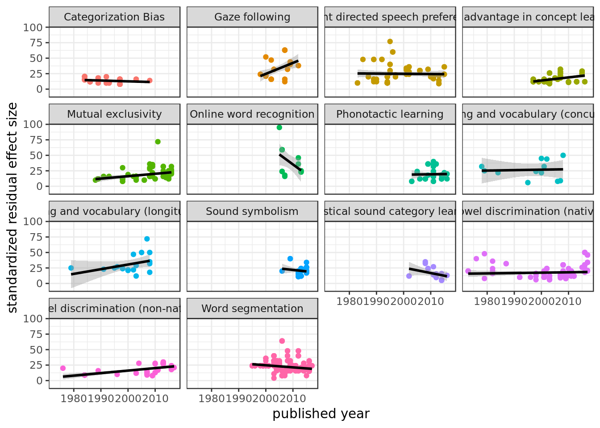
Again, not sure what the right analysis is here. But, predicting sample size with year, controling for everything else, sample sizes tend to get bigger with time.
kable(tidy(lm(n_total ~ year + response_mode + dataset + method, data = all_data)))| term | estimate | std.error | statistic | p.value |
|---|---|---|---|---|
| (Intercept) | -278.9741867 | 102.4782653 | -2.7222766 | 0.0065969 |
| year | 0.1461106 | 0.0511476 | 2.8566444 | 0.0043708 |
| response_modeEEG | -3.2920813 | 7.1726811 | -0.4589750 | 0.6463526 |
| response_modeeye-tracking | -0.6806722 | 1.1980814 | -0.5681352 | 0.5700716 |
| response_modeNIRS | -6.6599746 | 4.6205594 | -1.4413784 | 0.1497931 |
| response_modeother | -12.5525989 | 3.9338324 | -3.1909338 | 0.0014626 |
| datasetGaze following | 17.0304169 | 2.3378272 | 7.2847201 | 0.0000000 |
| datasetInfant directed speech preference | 11.3752408 | 3.8459743 | 2.9577007 | 0.0031729 |
| datasetLabel advantage in concept learning | 1.4025449 | 1.6708450 | 0.8394225 | 0.4014343 |
| datasetMutual exclusivity | 3.7997471 | 1.6839775 | 2.2564120 | 0.0242616 |
| datasetOnline word recognition | 25.2856160 | 4.6741090 | 5.4097189 | 0.0000001 |
| datasetPhonotactic learning | 2.8711353 | 4.3005577 | 0.6676193 | 0.5045318 |
| datasetPointing and vocabulary (concurrent) | 26.4002385 | 7.6116394 | 3.4684037 | 0.0005460 |
| datasetPointing and vocabulary (longitudinal) | 30.2162281 | 7.4589929 | 4.0509796 | 0.0000550 |
| datasetSound symbolism | 5.1618772 | 3.7302252 | 1.3837977 | 0.1667314 |
| datasetStatistical sound category learning | 2.7514950 | 4.5136919 | 0.6095886 | 0.5422738 |
| datasetVowel discrimination (native) | 3.3235617 | 3.9681254 | 0.8375647 | 0.4024768 |
| datasetVowel discrimination (non-native) | 5.3348120 | 4.1677553 | 1.2800205 | 0.2008369 |
| datasetWord segmentation | 5.4715719 | 3.9508155 | 1.3849222 | 0.1663873 |
| methodcentral fixation | 1.6914637 | 4.8115905 | 0.3515394 | 0.7252583 |
| methodconditioned head-turn | -2.7241507 | 5.0429257 | -0.5401925 | 0.5891854 |
| methodforced-choice | 1.4380752 | 6.0697008 | 0.2369269 | 0.8127624 |
| methodhead-turn preference procedure | 2.4545567 | 4.9172175 | 0.4991759 | 0.6177660 |
| methodhigh-amplitude sucking | 13.1346784 | 5.7374907 | 2.2892723 | 0.0222727 |
| methodhybrid visual habituation procedure | 3.1963915 | 6.6534568 | 0.4804106 | 0.6310412 |
| methodlooking while listening | 0.2719424 | 5.4102979 | 0.0502639 | 0.9599222 |
| methododdball | -5.5962025 | 9.0519490 | -0.6182318 | 0.5365643 |
| methodstimulus alternation | 1.4314259 | 6.1126487 | 0.2341744 | 0.8148979 |
| methodword-object pairing | 0.4022508 | 7.2242633 | 0.0556805 | 0.9556075 |
Do some journals publish more robust effects than others?
pat <- "developmental science|cognition|child development|cognitive psychology|journal of experimental child psychology|developmental psychology|plos one|language learning and development|infancy|first language|journal of memory and language|proceedings|language and speech|language and cognitive processes|psychological science|unpublished|journal of phonetics|journal of cognition and development|journal of child language|poster|the journal of the acoustical society of america|perception [&] psychophysics|journal of experimental psychology: human perception and performance|psychonomic bulletin [&] review|journal of speech, language, and hearing research|frontiers in psychology|cortex|science|infant behavior and development|bmc neuroscience|the journal of neuroscience|developmental psychobiology|international journal of bilingualism|psicothema|language learning [&] development"
all_data$journal = str_extract(tolower(all_data$long_cite), pat)
all_data %>%
filter(!is.na(journal)) %>%
ggplot( aes(x = journal, y = residual.d.s, fill = journal)) +
geom_violin() +
#geom_dotplot(binaxis='y', stackdir='center', dotsize = .2, aes(fill = dataset)) +
ylab("Standardized residual effect size") +
theme_bw() +
theme(axis.text.x = element_text(angle = 70, hjust = 1, size = 9))+
theme(legend.position="none") +
geom_hline(aes(yintercept = 0)) 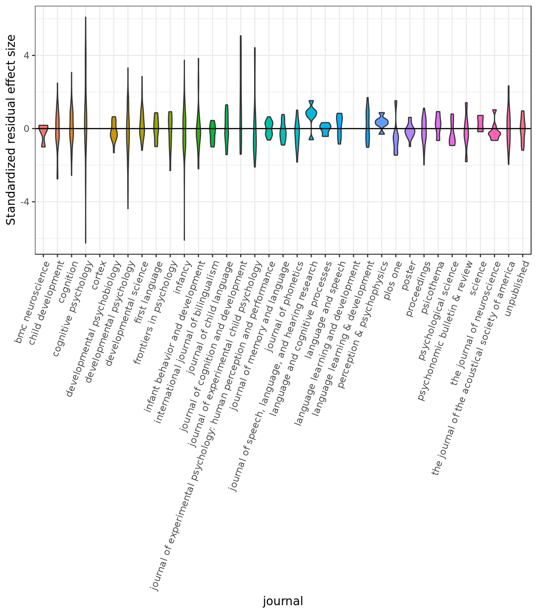
all_data %>%
filter(!is.na(journal)) %>%
group_by(journal) %>%
multi_boot_standard(col = "residual.d.s") %>%
ggplot( aes(x = reorder(journal, mean), y = mean, fill = journal)) +
geom_bar(position="dodge", stat="identity") +
geom_errorbar(aes(ymin = ci_lower, ymax= ci_upper),
width=0.2, position="dodge") +
ylab("Standardized residual effect size") +
xlab("journal") +
theme_bw() +
theme(legend.position="none") +
theme(axis.text.x = element_text(angle = 70, hjust = 1, size = 9)) 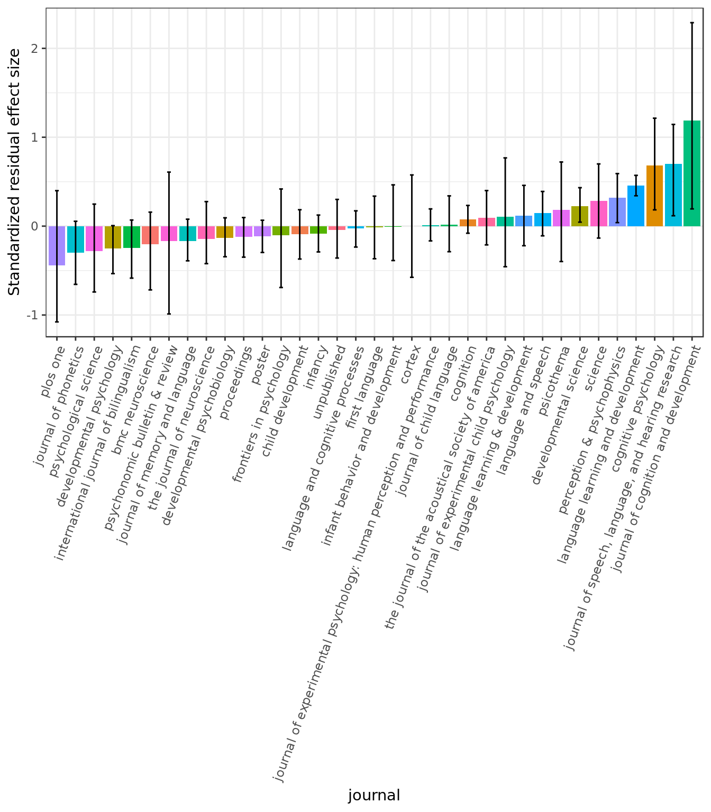
No evidence of major bias by journal.
Is the impact factor of a journal related to its effect size?
d.if = read.csv("impact_factors.csv")
all_data = left_join(all_data, d.if, by = "journal")
ggplot(all_data, aes(IF)) +
geom_histogram() +
theme_bw()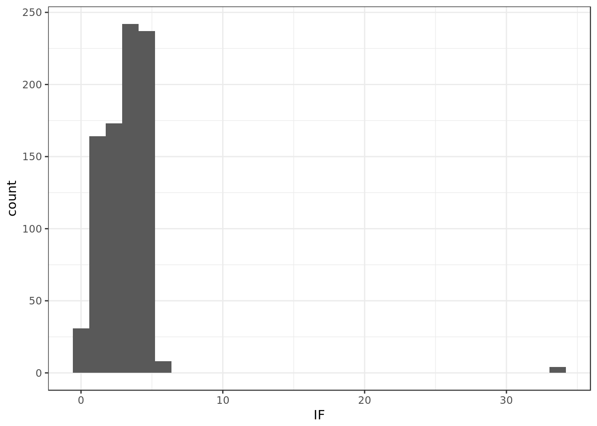
all_data %>%
filter(!is.na(IF)) %>%
filter(IF < 10) %>%
ggplot(aes(x= IF, y = residual.d.s)) +
geom_point(aes(color = dataset)) +
xlab("Impact factor") +
ylab("standardized residual effect size") +
geom_smooth(method = "lm", color = "black") +
theme_bw() +
theme(legend.position="none") 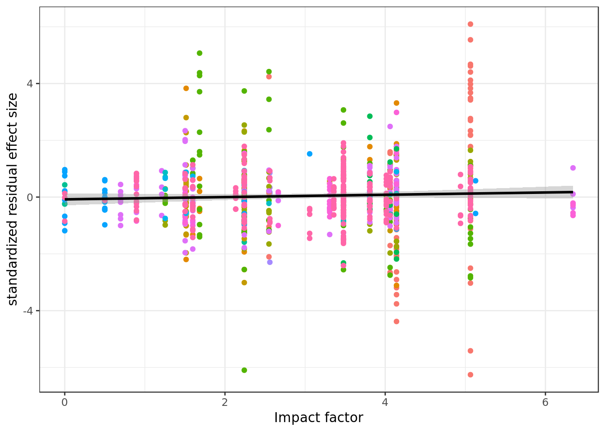
No evidence for an effect of impact factor on effect size.
Correlation between residualized effect sizes and impact factors:
all_data %>%
filter(!is.na(IF)) %>%
filter(IF < 10) %>%
do(tidy(cor.test(.$residual.d.s,.$IF))) %>%
kable()| estimate | statistic | p.value | parameter | conf.low | conf.high | method | alternative |
|---|---|---|---|---|---|---|---|
| 0.0424565 | 1.24111 | 0.2149063 | 853 | -0.0246602 | 0.1091922 | Pearson’s product-moment correlation | two.sided |
No evidence of impact factor on residiualized effect size.
Meta-analytic model:
rma(d_calc ~ response_mode + method + mean_age_1 + dataset + IF,
vi = d_var_calc, data = all_data, method = "REML")##
## Mixed-Effects Model (k = 859; tau^2 estimator: REML)
##
## tau^2 (estimated amount of residual heterogeneity): 0.3544 (SE = 0.0215)
## tau (square root of estimated tau^2 value): 0.5953
## I^2 (residual heterogeneity / unaccounted variability): 87.19%
## H^2 (unaccounted variability / sampling variability): 7.80
## R^2 (amount of heterogeneity accounted for): 26.91%
##
## Test for Residual Heterogeneity:
## QE(df = 830) = 4436.0357, p-val < .0001
##
## Test of Moderators (coefficient(s) 2:29):
## QM(df = 28) = 242.6648, p-val < .0001
##
## Model Results:
##
## estimate se zval
## intrcpt -0.0009 0.4661 -0.0019
## response_modeEEG 0.1420 0.4964 0.2861
## response_modeeye-tracking -0.2188 0.0871 -2.5132
## response_modeNIRS -0.5472 0.3957 -1.3829
## response_modeother 0.2234 0.3996 0.5589
## methodcentral fixation -0.1517 0.3339 -0.4542
## methodconditioned head-turn 0.3401 0.3523 0.9654
## methodforced-choice 0.6226 0.4506 1.3816
## methodhead-turn preference procedure -0.2438 0.3415 -0.7141
## methodhigh-amplitude sucking 0.4167 0.4110 1.0139
## methodhybrid visual habituation procedure -1.1839 0.4890 -2.4210
## methodlooking while listening -0.0872 0.3802 -0.2293
## methododdball -0.8288 0.6443 -1.2864
## methodpointing 0.3722 0.6348 0.5863
## methodword-object pairing -0.6055 0.4960 -1.2208
## mean_age_1 -0.0001 0.0001 -1.9582
## datasetGaze following 0.7950 0.1862 4.2704
## datasetInfant directed speech preference 0.7394 0.3234 2.2862
## datasetLabel advantage in concept learning -0.0800 0.1389 -0.5760
## datasetMutual exclusivity 0.3759 0.1229 3.0584
## datasetOnline word recognition 1.6138 0.3748 4.3064
## datasetPhonotactic learning 0.3914 0.3637 1.0763
## datasetPointing and vocabulary (concurrent) 0.4662 0.3624 1.2867
## datasetSound symbolism 0.3642 0.3122 1.1663
## datasetStatistical sound category learning 0.4166 0.3872 1.0758
## datasetVowel discrimination (native) 0.8357 0.3299 2.5330
## datasetVowel discrimination (non-native) 0.7640 0.3432 2.2260
## datasetWord segmentation 0.4844 0.3273 1.4801
## IF 0.0102 0.0103 0.9869
## pval ci.lb ci.ub
## intrcpt 0.9985 -0.9145 0.9127
## response_modeEEG 0.7748 -0.8308 1.1149
## response_modeeye-tracking 0.0120 -0.3894 -0.0482 *
## response_modeNIRS 0.1667 -1.3229 0.2284
## response_modeother 0.5762 -0.5599 1.0066
## methodcentral fixation 0.6497 -0.8061 0.5028
## methodconditioned head-turn 0.3343 -0.3504 1.0307
## methodforced-choice 0.1671 -0.2606 1.5058
## methodhead-turn preference procedure 0.4752 -0.9131 0.4254
## methodhigh-amplitude sucking 0.3106 -0.3888 1.2221
## methodhybrid visual habituation procedure 0.0155 -2.1424 -0.2255 *
## methodlooking while listening 0.8186 -0.8324 0.6580
## methododdball 0.1983 -2.0915 0.4340
## methodpointing 0.5577 -0.8720 1.6164
## methodword-object pairing 0.2222 -1.5776 0.3666
## mean_age_1 0.0502 -0.0003 0.0000 .
## datasetGaze following <.0001 0.4301 1.1599 ***
## datasetInfant directed speech preference 0.0222 0.1055 1.3733 *
## datasetLabel advantage in concept learning 0.5646 -0.3523 0.1923
## datasetMutual exclusivity 0.0022 0.1350 0.6168 **
## datasetOnline word recognition <.0001 0.8793 2.3483 ***
## datasetPhonotactic learning 0.2818 -0.3213 1.1042
## datasetPointing and vocabulary (concurrent) 0.1982 -0.2440 1.1765
## datasetSound symbolism 0.2435 -0.2478 0.9761
## datasetStatistical sound category learning 0.2820 -0.3424 1.1756
## datasetVowel discrimination (native) 0.0113 0.1891 1.4824 *
## datasetVowel discrimination (non-native) 0.0260 0.0913 1.4368 *
## datasetWord segmentation 0.1389 -0.1571 1.1260
## IF 0.3237 -0.0101 0.0305
##
## ---
## Signif. codes: 0 '***' 0.001 '**' 0.01 '*' 0.05 '.' 0.1 ' ' 1